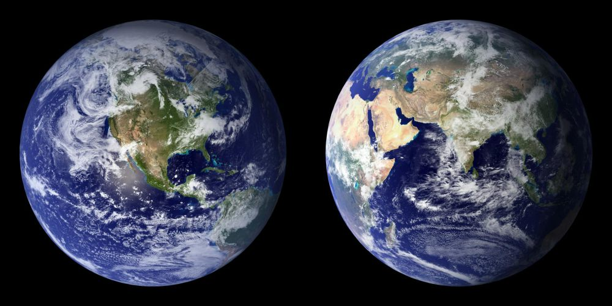
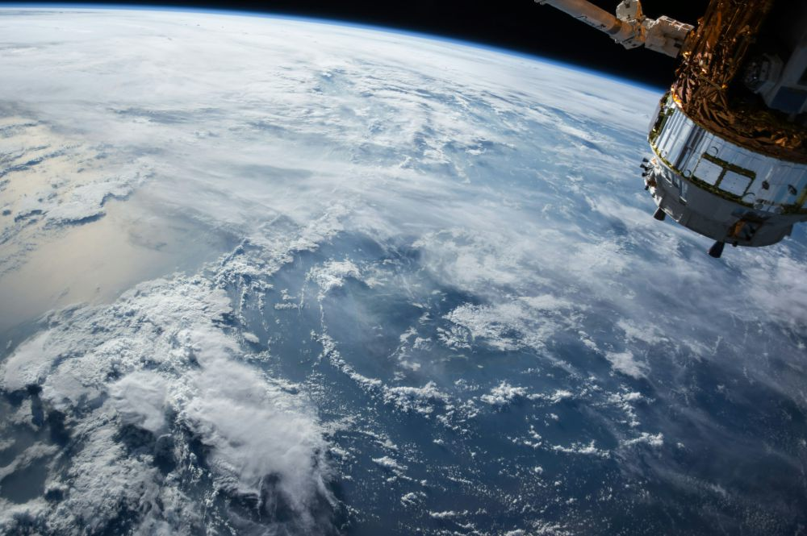
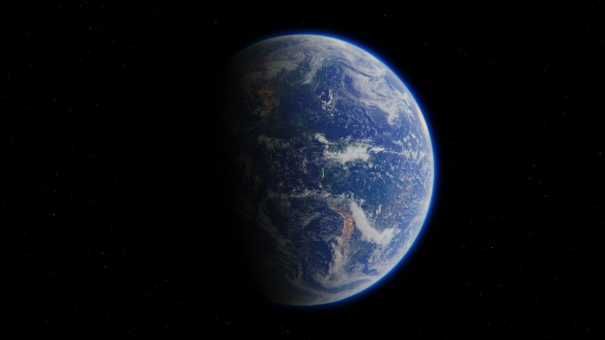
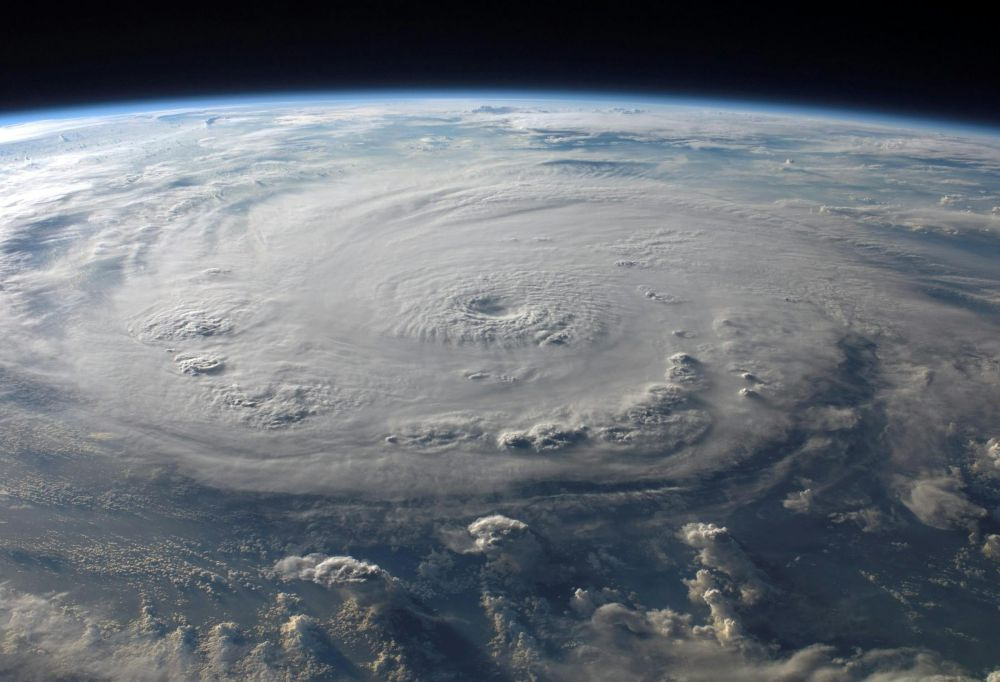

Fakta Menarik Tentang Bumi
Bumi Tidak Bulat Sempurna
Dilansir NOAA's National Ocean Service, Bumi sebetulnya memiliki bentuk oblate spheroid yang artinya tidak benar-benar bulat. Bumi memiliki bagian yang sedikit lebih lebar di bagian ekuator daripada di kutub. Rotasi Bumilah yang menyebabkan adanya sedikit tonjolan di bagian tengah, sehingga membuat planet ini tidak sepenuhnya bulat.
Lapisan Atmosfer Bumi Membentang Sampai 10 Ribu Kilometer
Dilansir NOAA, lapisan atmosfer Bumi ternyata tidak hanya memiliki luas beberapa kilometer saja, melainkan justru terbagi ke dalam beberapa lapisan dan lapisan terluarnya saja mencapai sekitar 10 ribu kilometer dari permukaan Bumi. Walau begitu, rata-rata manusia memang biasanya hidup di bagian bawah atmosfer, troposfer.
Bumi Pernah Berwarna Ungu Sebelumnya
Dilansir Live Science, beberapa ilmuwan menduga bahwa miliaran tahun lalu ternyata ada mikroorganisme primitif yang menggunakan molekul lain selain klorofil untuk menangkap cahaya. Inilah yang kemudian memberikan warna ungu pada Bumi, sehingga hipotesisnya pun dikenal sebagai "Hipotesis Bumi Ungu".
Medan Magnet Pada Bumi Terus Berubah
Dilansir NASA Science, medan magnet Bumi seolah terus bergeser dan bahkan mengalami pembalikan total setiap beberapa ratus ribu tahun. Ini artinya kutub utara dan kutub selatan magnetik Bumi bisa saja bergantian tempat, padahal medan magnet sangat penting untuk melindungi manusia dari potensi radiasi Matahari yang berbahaya.
Hari Di Bumi Berpotensi Menjadi lebih Panjang
Dilansir Live Science, sekitar 4,5 miliar tahun lalu ternyata satu hari berlangsung sekitar 6 jam, namun seiring berjalannya waktu mengalami perubahan. Gravitasi Bulan memperlembat rotasi Bumi dan saat ini satu hari berlangsung 24 jam. Namun, bisa jadi dalam miliaran tahun mendatang bisa jadi durasi harinya akan lebih panjang dari biasanya.